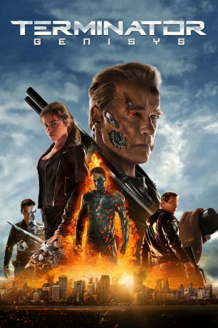

 
 IMDB-Wertung: 6.5 / 10
IMDB-Wertung: 6.5 / 10  Metascore:
Metascore: 
Im Jahr 2029 kämpft der Rebellenanführer John Connor gegen die Übermacht des Skynet-Maschinenimperiums. Er schickt seinen loyalen Freund Kyle Reese zurück ins Jahr 1983, um seine Mutter Sarah Conner vor einem Killer-Roboter zu beschützen und so die Zukunft der Menschheit sicherzustellen. Doch als Kyle Reese im Los Angeles der 1980er ankommt, muss er feststellen, dass die erwartete Vergangenheit nicht mehr existiert. Sarahs Eltern wurden von einem durch die Zeit gereisten Terminator ermordet, ein Android des Modells T-800 hatte das 9-jährige Mädchen danach beschützt und großgezogen. Kyle erklärt Sarah, was in der Zukunft geschehen wird, doch sie wehrt sich entschieden gegen die Vorstellung, dass ihre Geschichte schon vorherbestimmt ist – und nimmt den Kampf mit Gegnern wie dem T-1000 auf…
Jahr: 2015
Dauer: 126 Minuten
FSK: 12
Land: USA Studio: Paramount PicturesTonspuren: DTS - , DD5.1 - ,
Untertitel: Deutsch, Englisch,
Auflösung: 1080p (1920x1080) Größe: 11776 MB
Genre: Action, Abenteuer, Sci-Fi, Thriller
Regisseur: Alan Taylor
Drehbuch: Laeta Kalogridis, Patrick Lussier, James Cameron, Gale Anne Hurd
Soundtrack: Lorne Balfe
Darsteller:
 Arnold Schwarzenegger als Guardian
Arnold Schwarzenegger als Guardian Jason Clarke als John Connor
Jason Clarke als John Connor Emilia Clarke als Sarah Connor
Emilia Clarke als Sarah Connor Jai Courtney als Kyle Reese
Jai Courtney als Kyle Reese J.K. Simmons als O'Brien
J.K. Simmons als O'Brien Dayo Okeniyi als Danny Dyson
Dayo Okeniyi als Danny Dyson Courtney B. Vance als Miles Dyson
Courtney B. Vance als Miles Dyson Byung-hun Lee als Cop / T-1000
Byung-hun Lee als Cop / T-1000 Michael Gladis als Lt. Matias
Michael Gladis als Lt. Matias Sandrine Holt als Detective Cheung
Sandrine Holt als Detective Cheung Gregory Alan Williams als Detective Harding
Gregory Alan Williams als Detective Harding Griff Furst als Agent Burke
Griff Furst als Agent Burke Seth Meriwether als Skynet - 18 yrs old
Seth Meriwether als Skynet - 18 yrs old Afemo Omilami als Perry
Afemo Omilami als Perry Teri Wyble als Mariam
Teri Wyble als Mariam Kerry Cahill als Lt. Whitley
Kerry Cahill als Lt. Whitley Mark Adam als Kyle's Dad
Mark Adam als Kyle's Dad Kerry O'Malley als Kyle's Mom
Kerry O'Malley als Kyle's Mom James Moses Black als Security Guard #1
James Moses Black als Security Guard #1 Terry Dale Parks als Security Guard #2
Terry Dale Parks als Security Guard #2 Douglas Smith als Eric Thompson
Douglas Smith als Eric Thompson Anthony Michael Frederick als Lead Cop
Anthony Michael Frederick als Lead Cop Brett Azar als Guardian - Young / Terminator T-800
Brett Azar als Guardian - Young / Terminator T-800 Douglas M. Griffin als Garber
Douglas M. Griffin als Garber Thomas Francis Murphy als Derelict
Thomas Francis Murphy als Derelict Joshua Mikel als Angry Driver
Joshua Mikel als Angry Driver John Edward Lee als Punk #1
John Edward Lee als Punk #1 Luke Sexton als Punk #3
Luke Sexton als Punk #3 Ross P. Cook als Soldier #1
Ross P. Cook als Soldier #1 Christopher Heskey als Soldier #2
Christopher Heskey als Soldier #2 Jerome Andries als Officer Fisher , uncredited
Jerome Andries als Officer Fisher , uncredited Michael D. Anglin als Guerrilla Soldier , uncredited
Michael D. Anglin als Guerrilla Soldier , uncredited John L. Armijo als San Francisco Cop #2 , uncredited
John L. Armijo als San Francisco Cop #2 , uncredited Charles Barber als Guerilla Officer , uncredited
Charles Barber als Guerilla Officer , uncredited Patrick Constantine Bertagnolli Jr. als Officer Cazzuto , uncredited
Patrick Constantine Bertagnolli Jr. als Officer Cazzuto , uncreditedDatei: X:\5-Pentalogie(A-Z)\Terminator\Terminator 5 - Genisys (2015, FSK12, 1920x1080) 3D.mkv seit 23.10.2015
Festplatte: HD Collection-3(N-Z)-6(A-Z)
 Es gibt insgesamt 9 Filme in der Gruppe '5-Pentalogie(A-Z)\Terminator'
Es gibt insgesamt 9 Filme in der Gruppe '5-Pentalogie(A-Z)\Terminator'